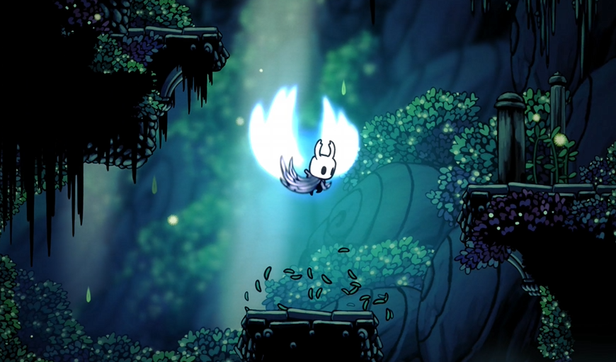
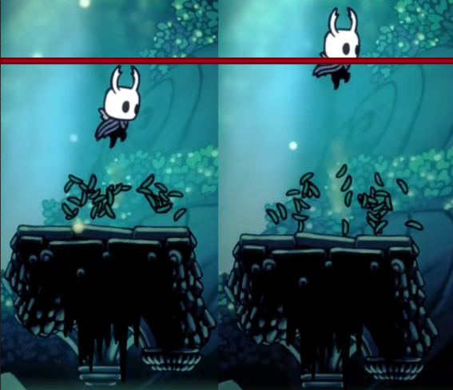
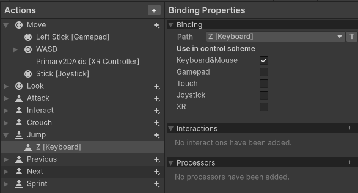
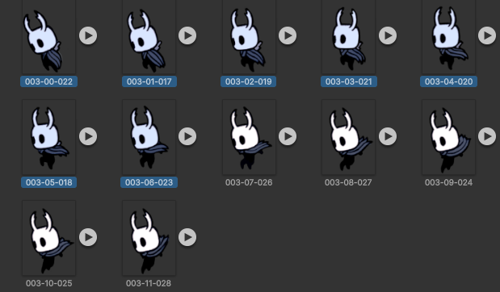
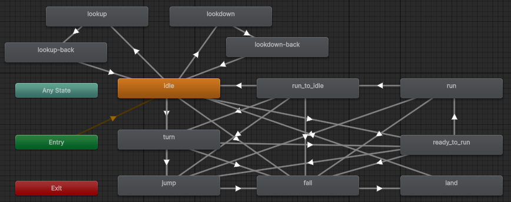
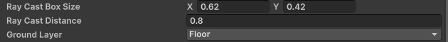
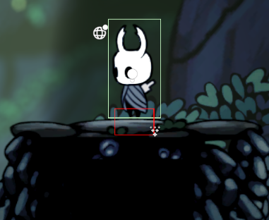

空洞騎士重現 - Jump

Long time no see ~~~ 距離上次更新已經過了4個月了，這段時間都忙於工作跟遊戲XD，但我回來了，這次我要好好堅持寫作💪，本篇目標是要重現小騎士優雅地跳躍，不過我發現了一些開發上的重大問題 !! 文末說明，因此本次的內容會少一點，封面中的二跳也不會出現在本次實作 ><。
重現場景
這次要重現的場景可說是空洞騎士中最複雜、使用最多 sprites 的區域 - 蒼綠之徑，不論是背景還是前景的細節都多到爆，但就跟之前的場景一樣是靠少少幾個 sprite 堆出來的:
- 蒼綠之鏡場景 - 前景背景 sprite 都是取自這邊，我主要用了 0126 ~ 0133 圖檔來堆疊出那一堆的植物景色。
- 小騎士 Move 動畫 - 會使用 003.Airborne, 011.Land, 061.Fall，部分畫面有紅框框，可以參考 Day2 去除，其中 Airborne 前半段是起跳的動作，後半段則是空中墜落的畫面，另外有需要二跳可以用 098.Double Jump, 100.Double Jump Wings 2。
Dynamic Jump

空洞騎士中的跳躍如上圖所示是有程度差異的，跳躍鍵按得越久跳得越高，短跳讓小騎士不會撞到頭上的尖刺、長跳讓小騎士能飛越峽谷，提供玩家更多可控性，要達成這種效果:
- Jump Input System - 跟之前一樣替我們 Player 的輸入添加 Jump 按鍵，這裡用跟遊戲預設的一樣 z 按鍵。
-
跳躍效果 - 只要玩家按下跳躍鍵就將按鍵狀態存到
jumpInput，並在固定更新的時間去檢查只要玩家持續按著跳躍鍵就施加向上的力，就可以做出 dynamic jump height 的效果，但會導致小騎士變成飛天火箭 🚀，所以要設一個上限，只要超過施力的次數就停止。

// Player.cs
void Awake()
{
...
jumpCou = 0;
jumpInput = 0f;
controls.Player.Jump.performed += ctx => jumpInput = ctx.ReadValue<float>();
controls.Player.Jump.canceled += ctx => jumpInput = 0f;
}
void FixedUpdate()
{
Vector2 force = Vector2.zero;
...
if ( jumpInput > 0 && jumpCou < JUMPLIMIT )
{
force.y = JUMPFORCE;
jumpCou += 1;
}
else
{
force.y = 0;
jumpCou = 0;
}
...
}

Falling & Land

起跳後會有兩個額外的動作需要考慮，當小騎士下墜後動作會切成 Falling，以及最後接觸地面時轉換成 Land，把這些都考慮進去後就會得到上面那張蜘蛛網 XD，不過實際上只多了四種轉換而已:
- 水平移動狀態 -> jump - 由於小騎士可以在各種情況下起跳，就直接把以前創建的水平移動狀態都拉了一條 Transition 到 jump，至於觸發狀態就是當
jumpInput > 0。 - jump -> fall - 角色何時會落下呢? 可以直接檢查當下的 y 軸速度，當速度轉負就代表角色開始向下移動，而在空洞騎士中只代表下墜。
// Player.cs
void Update()
{
Vector2 vec = rb.linearVelocity;
...
if ( vec.y < 0 )
{
anime.SetBool("fall", true);
}
else
{
anime.SetBool("fall", false);
}
...
}
fall = false 就切換為 land。Ground Detection
眼尖的讀者會發現其實上面的實作會有一個重大的問題 !!! 就是玩家可以進行無限次的空中跳躍，因為只要放開跳躍鍵 jumpCou 就會歸零，然後就可以再按一次跳躍了，為了確保玩家還沒拿到帝王之翼就在那邊二段跳，必須確保停止跳躍後只能等著陸後才能再次觸發。
當然我們可以用前面提到的 y 軸速度來判定是否已經著陸了，但這在後續的應用中會比較難成立，例如攀牆會慢慢往下滑，但攀牆時應該要能跳躍才對，因此這裡要介紹的是最常見的做法: Raycast Ground Check，連結是一個淺顯易懂的教學影片，推薦觀看。
// Player.cs
bool isGrounded()
{
if (Physics2D.BoxCast(transform.position, RayCastBoxSize, 0, -transform.up, RayCastDistance, GroundLayer))
{
return true;
}
else
{
return false;
}
}
void OnDrawGizmos()
{
Gizmos.color = Color.red;
Gizmos.DrawWireCube(transform.position - transform.up * RayCastDistance, RayCastBoxSize);
}
具體來說我們要新增上面兩個函數，前者是用來判定是否著陸、後者則是視覺化設定的參數:
- transform.position - 代表小騎士的位置 (x, y)。
- RayCastBoxSize - Vector2, 產生的 box 長寬 (w, h)。
-
RayCastDistance - float，產生的 box 偏移量，前面有設定
-transform.up，代表是向下偏移。 - GroundLayer - LayerMask，代表要偵測的 layer。


到這邊就可以理解到 Raycast 就是在幫我們計算這個 box 是否與該 layer 的 collidar 有所接觸，只要有任何一個接觸到就代表小騎士著陸了，可以透過這個 isGrounded 函數來控制玩家的跳躍鍵放開後只能等著陸才能再次觸發 ~~~ 當然有了二跳之後可以允許多跳一次。
成品
這次的最終成品有點 ... @@，我評分為 50 分不及格，除了包含二跳以外的一堆東西都沒弄，主要在動作切換上有點不順暢，且跳躍的參數控制也沒有調整好，整個跳躍與落下都不自然，這主要是由於目前的 rigidbody 設定問題以及隨著角色的動作越來越複雜，現在的程式沒有引入整體的狀態機導致程式架構凌亂，這些問題都需要修正阿 !
總結
本次簡單且久違的介紹了遊戲中的跳躍機制，不過也讓我意識到目前的專案架構問題，下次就讓我好好整理一下發現的問題以及如何修正，讓這個重現專案更有樣子點。